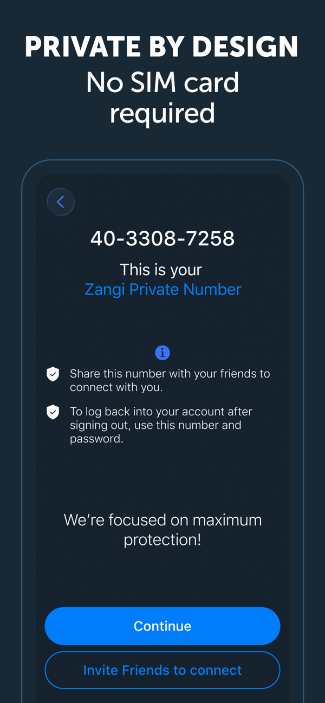

上手 Zangi 三天，这款默认加密的聊天软件让我有点意外
一款主打隐私安全的通讯应用，所有消息、通话、文件默认端到端加密且不可关闭。我用了三天，说说它的私密号模型、群语音、文件传输这些核心体验，以及它和主流聊天工具到底有什么不一样。
朋友那天突然甩给我一串数字："这是我的 Zangi 号，加我。"
我第一反应是啥？以为又是某个新晋社交 App 的邀请码。搜了一下才搞清楚——从它的官网上能看出来，Zangi 是一款主打端到端加密的通讯软件，装它纯粹是好奇心驱动。这年头敢拍胸脯说"所有内容默认加密、没有关闭选项"的聊天工具真不多见，我就想亲身体验一下，它到底是个噱头还是真东西。
第一眼：界面干净得有点过分，私密号设计反直觉
安装包从官方下载拿的，不算大，装好打开第一件事就是生成你的"私密号"——不是手机号，不是邮箱，就是一串系统分配的纯数字。我当场愣住了：这玩意儿怎么加好友？难道还要像早年用 ICQ 那样找人要号？
界面本身没什么花里胡哨的东西，聊天列表、通讯录、设置，标准三件套。但真正让我感到"不一样"的是这个私密号模型。

说实话，这个设计第一感觉是"有点原始"。没有通讯录自动匹配你身边的朋友，没有推荐你可能认识的人，甚至系统通讯录里存了朋友的 Zangi 号它都不会自动弹出来——谁想加谁，就得把自己的私密号亲手告诉对方，然后对方手动输号保存。
我第一反应是这也太麻烦了。但用了两三天才慢慢 get 到：这不就是它防骚扰的底气吗？别人没你的号，连给你发消息的门都找不到。对比一下微信那种"通过手机号就能加"的机制，这种隔离感反而让人觉得踏实。
私密号加人这件事：麻烦是真的，但安全感也是真的
那天想拉另一个朋友进来，就得先把我自己的私密号从 Zangi 里找出来发给他，他输号保存，然后才能互发消息。中间还经历了一次"看不到联系人显示为号码"的小插曲，后来发现是他没存对我号——这个排障清单我后来特意去zangi文档里翻了一下，挺完整的，从权限到版本到重新登录，每一步都讲得很清楚。
Zangi 还有一套完整的隐私与安全体系，应用锁、隐藏会话、阅后即焚这些该有的都有。它的加密设计理念跟其他通讯应用不太一样——不是给你一个"要不要开启秘密聊天"的开关让你选，而是所有会话、所有内容默认同级加密，根本就没有明文模式这回事。这点说实话挺震撼的，像是在说"我不提供不安全的选项"。
群语音体验：普通档够用，Premium 千人那个我只敢想想
用了几天之后我拉了个 6 人的小群，试了下群语音功能。发起权限挺严的，只有群主和管理员能开，普通成员不行——这个设计我倒挺喜欢，避免了群里有人乱开语音打扰大家。
普通用户的群语音上限大概 8 到 10 人，刚好能凑够一场小范围讨论。中途加入退出都很灵活，通话也全程加密，跟单聊是同等级的安全保障。有个细节挺贴心的：嫌群吵可以只静音通话而不静音消息，三种静音粒度随你选。
至于 Premium 订阅的千人会议，我没买所以没法实测，但官方资料写得挺实在——上限跟着发起人走，Premium 用户发起的通话，普通成员照样能进、照样能凑满千人。而且弱网下不卡顿，这个描述让我挺动心的，下次有大型线上会议可以考虑升级试试。
不过也有个小遗憾：群视频目前还不支持，只有群语音。官方 FAQ 原话是"yet"，也就是说"还没，但正在路上"——聊胜于无吧，反正我现在也不怎么用群视频。
文件传输：400MB 上限 + 断点续传，这个真能用起来
最让我印象深刻的其实不是加密，而是文件传输。
前几天给朋友发了一个大约 380MB 的视频文件，发了一半家里 Wi-Fi 断了，我当时心想得重发了。结果网络恢复之后再打开会话，文件居然从断开的地方继续传了——没有从头开始，也没有重新让我选文件，自动续上了。
这个体验对我来说是前所未有的。我知道很多聊天工具传大文件会很痛苦，要么有个几百 M 的硬上限，要么稍微卡一下就得重发整个文件。Zangi 400MB 的单文件上限够用了，而且所有类型都能发——不管是视频、压缩包、PDF 还是 APK，什么格式都行。传输走的是分块加密通道，不存服务器，断了能续，这三个点加在一起，日常传个大文件基本没什么顾虑。
不过也得提一下：照片视频默认会被压缩，想要原画质得开 Premium。免费档嘛，压缩压缩也正常，反正我平时发的照片都是随手拍的，画质要求不高，没什么影响。
谁适合用 Zangi，谁又可能觉得它麻烦
我给它总结了一下：如果你对通讯安全有真实需求，Zangi 值得一试；如果你追求便利到极致，它可能会让你觉得拧巴。
适合的场景：你有需要严格保密的沟通内容、你被骚扰烦透了想要一款"陌生人找不到你"的聊天工具、或者你就是单纯好奇加密通讯到底是什么体验。Zangi 在这些场景下的表现是实打实的——从私密号隔离到三层加密到阅后即焚，整套设计都围绕着"你自己掌控谁能联系你、联系内容能留多久"展开。
不太适合的场景：你习惯了"手机号就能找到所有人"的便利、你群聊很多而且懒得手动给每个人发号、或者你对"端到端加密"的概念没什么感觉觉得无所谓。私密号加人那套流程对第一次用的人确实需要适应几天。
总结一下这三天的感受
说实话一开始我是带着"这会不会又是个概念包装"的心态装的，但三天用下来，Zangi 给我的感觉是"真做产品的"。加密不是个卖点而是个基础设定——没有开关让你犹豫"要不要开"，就是默认保护着你。私密号模型虽然反直觉，但背后的设计逻辑很自洽：你不告诉我你是谁，我就找不到你。
如果你的通讯里有敏感内容需要保护，或者你只是想试试一种"跟陌生人彻底隔离"的聊天方式，Zangi 确实值得上手体验一下。安装包不大，不用绑手机号，注册完就能用——哪怕最后觉得不适合卸掉也没什么成本。
对了，我想把那几张官方资料和更详细的技术说明也翻一遍，顺便查一下它的仓库代码。文档在GitHub上维护着完整版本，国内访问不太方便的朋友也可以直接去Gitee或GitCode拿备份，三个仓库同步更新，用哪个顺手就用哪个。如果之后用着觉得还不错，可能会考虑升级 Premium 试试千人会议那个功能。